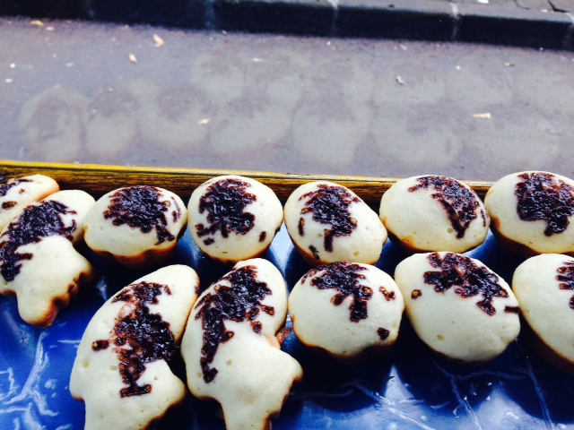
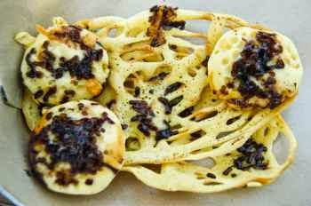

Kue Cubit

Kue Cubit Bandung termasuk jajanan kue basah yang menjadi idola anak-anak. Tapi jangan salah, bukan hanya anak-anak yang gemar menikmati si kue kecil mungil ini, remaja, dewasa bahkan orang tua pun juga menggemarinya.
Kue cubit ini memiliki rasa yang manis, bentuknya begitu menarik perhatian setiap orang, wajar saja jika begitu banyak yang menyukai. Sering kali kita melihat gerobak-gerobak yang menjual kue cubit di jalanan sekitar bandung penuh sesak oleh pembeli, karena cukup laris.
Taburan cokelat mesies diatas kue, merupakan salah satu ciri khas si kue imut, kue cubit. Ada beberapa varian dalam proses pemasakannya, yaitu setengah matang dan matang penuh. Varian setengah matang ini justru malah banyak penggemarnya, hal itu dikarenakan sensasi kenikmatan yang dihasilkan begitu menarik.
Kue Cubit Sarang Laba-laba
Adonan untuk membuat kue cubit ini tidak hanya akan menjadi kue cubit matang dan setengah matang, tapi sebenarnya bisa juga di bentuk menjadi yang namanya jaring laba-laba. Bentuknya nanti persis seperti jaring laba-laba tapi jaring laba-laba ini tidak tebal seperti kue cubit matang melainkan tipis seperti jaring dan di sajikan matang.
Berapa Harga Kue Cubit?
Untuk harga dari kue cubit ini bisa dikatakan murah, tapi beda penjual beda pula harga yang dibandrol, beraneka ragam. Ada penjual kue cubit yang membandrol harga per 11 kue seharga 10 ribu rupiah, ada juga yang menjual dengan harga 1 ribu rupiah untuk 1 kue.
Lokasi penjual kue cubit di kota Bandung.